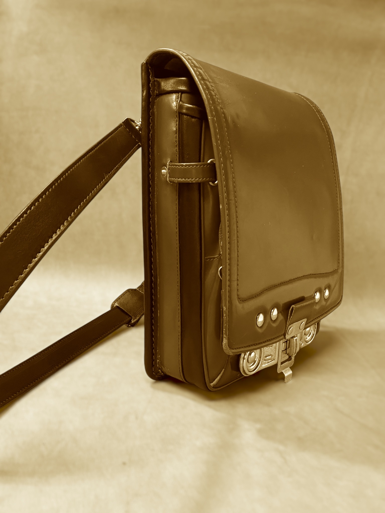

CONCEPT
思い出を、
思い出を、
これからも使い続ける。
小物に分けるだけではなく、ランドセルらしさを残しながら、大人が持てるバッグへ。傷も色つやも、その子だけの時間として活かします。
6年間の思い出を、しまい込まずに使い続ける。親の代から受け継いだ技術で、一点ずつ丁寧に仕立てます。

小物に分けるだけではなく、ランドセルらしさを残しながら、大人が持てるバッグへ。傷も色つやも、その子だけの時間として活かします。
かぶせ・金具・ステッチなど、思い出として残したい部分を活かします。
見た目だけでなく、長財布・スマホが入る実用性を考えて仕立てます。
革の状態を確認し、作れる形・価格・金具交換まで正直にご提案します。
革の状態・仕様・金具交換の有無により価格は変わります。
45,000円〜
普段使いしやすい定番。
55,000円〜
親への贈り物にも。
65,000円〜
仕様によりご相談。
※状態によっては制作できない形もあります。まずは写真で確認します。
ランドセルの正面・横・背面・傷みのある部分を送ってください。
革の状態を見て、バッグの形・金具・価格をご提案します。
思い出を活かしながら、長く使える形に仕立てます。
池戸かばん工房は岐阜県多治見市の小さな工房です。派手さよりも、長く使えること。思い出を大切にしながら、修理のことまで考えて仕立てます。